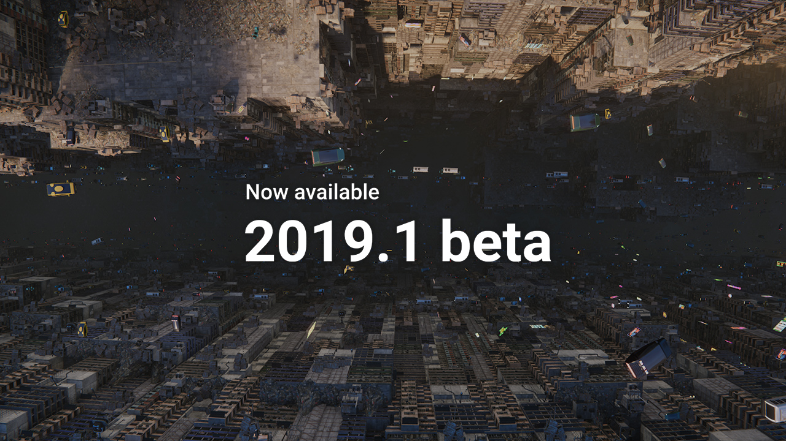
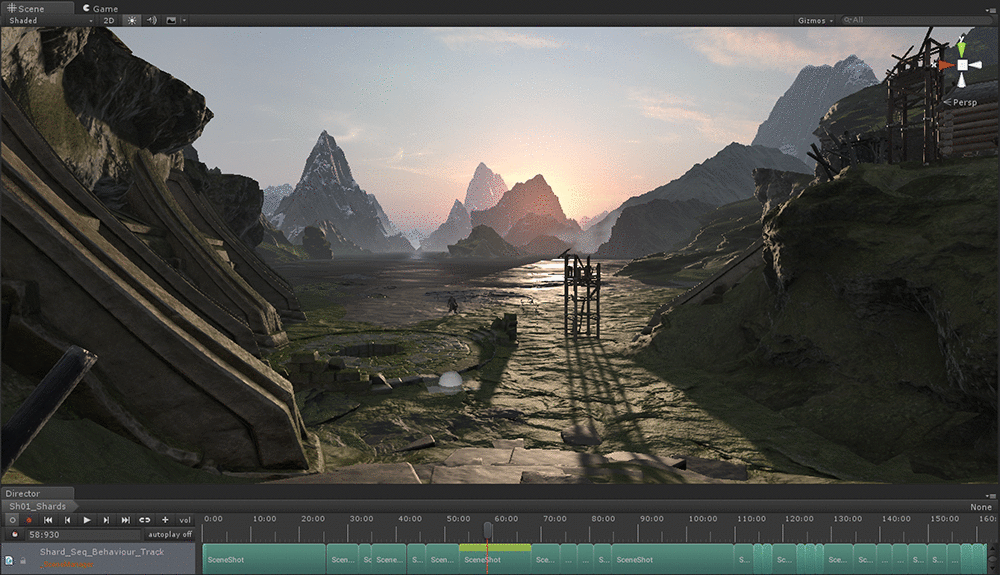
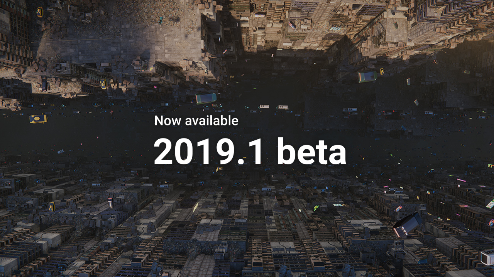
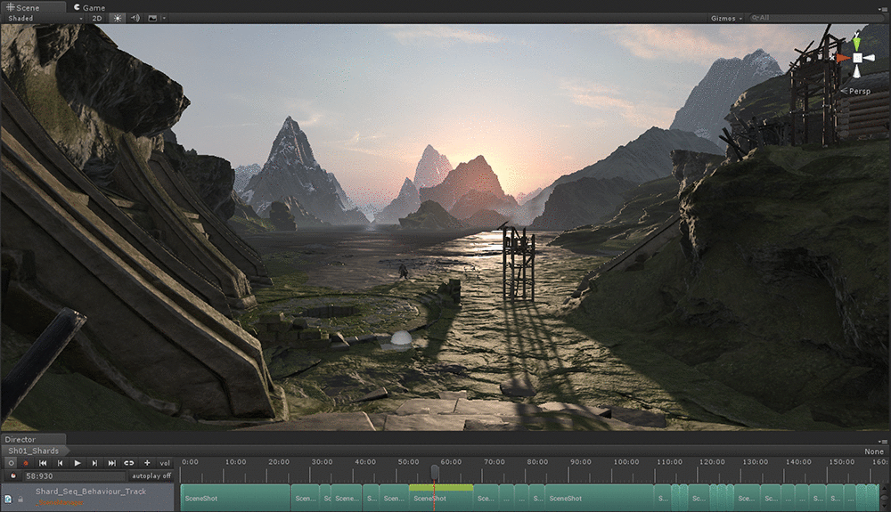

Making Games Using Unity
 



 It has much better cross-platform integration. It enables you to deploy your game across all major mobile, VR, desktop, console, and TV platforms plus the Web. The supported platforms include Android, iOS, Windows Phone, Tizen, PC, Mac, Linux, PS4, Xbox One, PlayStation Mobile, PlayStation Vita, Wii U, tvOS, Android Tv, and Samsung Smart TV. Native support is available for major VR platforms including Oculus Rift, Gear VR, Playstation VR, Microsoft HoloLens and Steam VR/Vive.
Unity is the best fit for creating mobile games as, overall, it’s easier to build them with this engine. In general, it’s more logical and convenient to develop simple games with Unity.
It is better and faster for developing mobile VR, e.g. for Cardboard.
It has a huge asset store and many plugins, which gives you more access to diverse game monetization infrastructure like mobile ad networks, ad videos, etc.
The engine architecture is simpler to understand and work with, the launch process is less complicated.
It has much better cross-platform integration. It enables you to deploy your game across all major mobile, VR, desktop, console, and TV platforms plus the Web. The supported platforms include Android, iOS, Windows Phone, Tizen, PC, Mac, Linux, PS4, Xbox One, PlayStation Mobile, PlayStation Vita, Wii U, tvOS, Android Tv, and Samsung Smart TV. Native support is available for major VR platforms including Oculus Rift, Gear VR, Playstation VR, Microsoft HoloLens and Steam VR/Vive.
Unity is the best fit for creating mobile games as, overall, it’s easier to build them with this engine. In general, it’s more logical and convenient to develop simple games with Unity.
It is better and faster for developing mobile VR, e.g. for Cardboard.
It has a huge asset store and many plugins, which gives you more access to diverse game monetization infrastructure like mobile ad networks, ad videos, etc.
The engine architecture is simpler to understand and work with, the launch process is less complicated.
1. Devotion 2. Outer Wilds 3. Phoenix Point 4. Pikuniku 5. Risk of Rain 2 6. The Stanley Parable: Ultra Deluxe 7. YIIK: A Postmodern RPG 8. Totally Accurate Battle Simulator